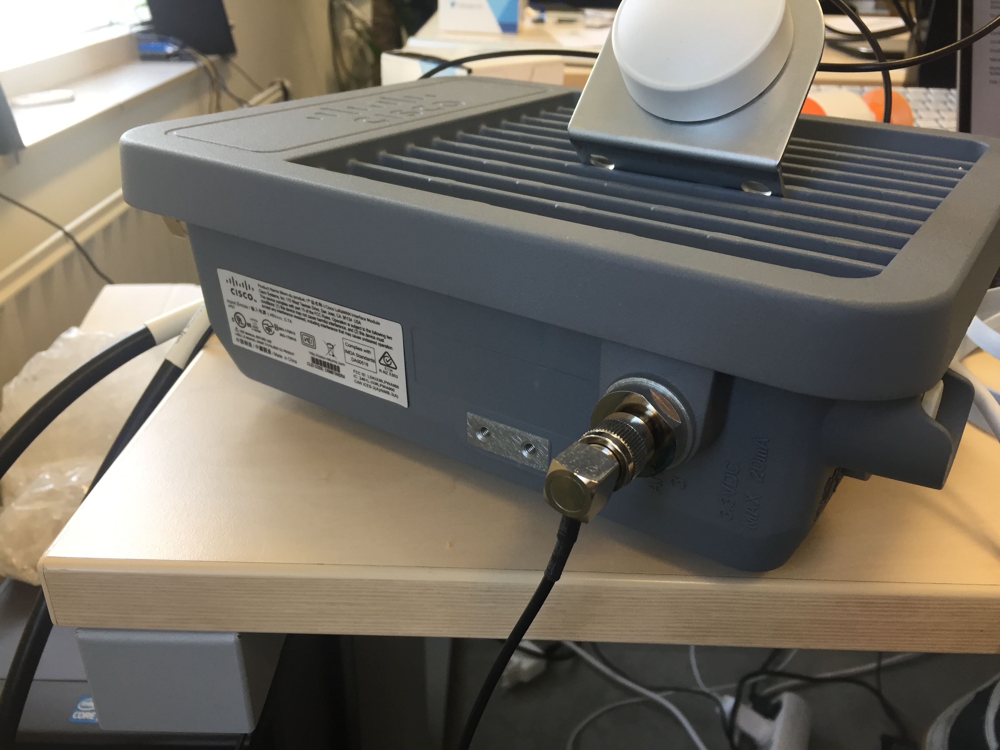
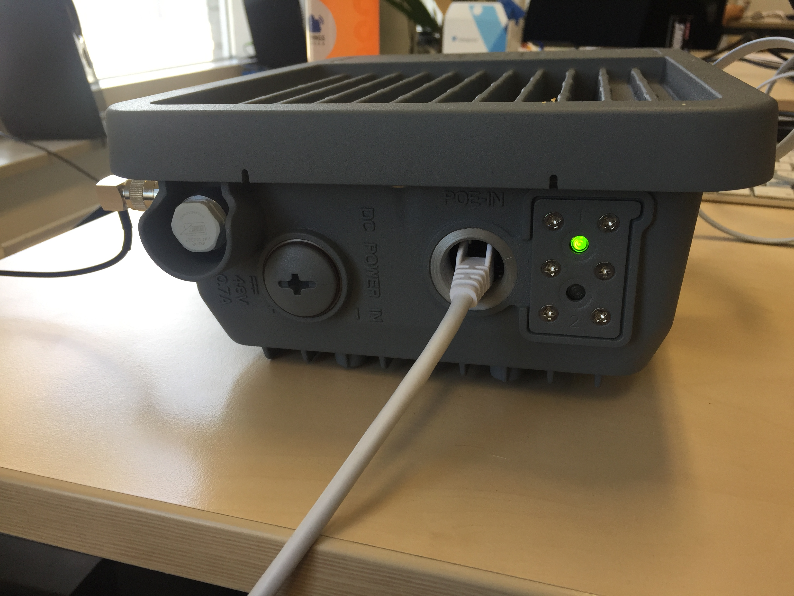

Setup
Outdated: this section documents The Things Network V2, which is no longer maintained. See the documentation for The Things Stack V3, or browse the V2 docs index.
Before starting the gateway, you’ll need to set it up. If you’ve never used Cisco equipment before, we’re providing you with basic instructions to set up the gateway, and basic system and network configuration.
Gateway setup #
-
Attach the antennas that you have for the gateway. If you have 2 antennas, plug in the both of them.
-
Plug in the GPS antenna for the gateway.

- Plug in the Ethernet cable of the gateway to your own switch or point of entry.

-
Plug in the power cable for the gateway. The Cisco LoRaWAN gateway supports two power methods:
-
Using a 48 VDC adapter, to plug in the Power port ;
-
Using Power over Ethernet if you have a PoE adapter. In that case, use the adapter on the Ethernet port of the gateway.
-
-
Finally, to access the Cisco console, you’ll need a console cable from USB to RJ45. Plug the RJ45 end in the Console port of the gateway, and the USB port to your computer.
Your gateway is now up and running, and connected to your computer!
Configuration #
Connect to the Cisco gateway console #
You now have a serial connection to the Cisco gateway’s console.
To open up a terminal, you have several approaches available:
-
Either use specialized serial connection software, such as Serial for macOS.
-
Either use your operating system’s native serial connection software. For example, on macOS and Linux, open a Terminal, and type the following commands:
ls /dev/tty.usb*You’ll see the list of available USB serial devices. Once you’ve found the once matching the Cisco console, connect using the following command:
screen <device> 115200 # e.g. screen /dev/tty.usbserial-AO001X6M 115200
System setup #
This part covers setting up basic system and network parameters: updating it, connecting it to a local network, setting up ntp and the GPS. If you have specific network constraints, check with your system or network administrator how to set up the system for your network.
You’ll notice that the user shell is quite different from Unix-based shells. This shell is called standalone mode, and is meant for a basic usage of the gateway. In many cases, the standalone mode shell won’t let you input unexpected characters and entries. In any shell, you can use the ? command to show the list of available commands.
First, type root to login as the privileged user, and enter enable to turn on privileged commands. To verify that privileged commands are enabled, check that the prompt is Gateway# and not Gateway>.
Update #
To update your Cisco gateway, you can download the latest firmware update here - at least version 2.0.30. You will need a Cisco account with the right permissions to download the update file. If your account does not have those permissions, get in touch with your Cisco representative or with Cisco support.
Once you’ve retrieved the update file, you can update your gateway by several ways: USB, FTP or TFTP. We’ll cover in this guide how to update over USB. You will need for this a USB stick formatted in FAT. The USB port of the Cisco IXM being tiny, you’ll want to use the tiniest USB stick that you own.
-
Copy the update
*.tar.gzfile ascisco_update.tar.gzfile at the root of the USB stick. -
Plug the USB stick in the Cisco gateway.
-
Execute the following commands:
usb enable archive download-sw firmware /normal /save-reload usb:cisco_update.tar.gz
This will update your Cisco firmware. After the operation, you can verify the installed version with show version.
Network setup #
To configure your Cisco Gateway to your network, type the following commands:
configure terminal # Enter global configuration mode
interface FastEthernet 0/1 # Enter Ethernet configuration
If your local network has a DHCP server attributing IPs:
ip address dhcp
Otherwise, if you know the static IP address of your gateway:
ip address <ip-address> <subnet-mask>
Next, type the following to save the network configuration of your gateway:
description Ethernet # Replace "Ethernet" by any description you want
exit # Exit Ethernet configuration
exit # Exit global configuration mode
copy running-config startup-config # Save the configuration
You can test your Internet configuration with the ping command, for example:
ping ip 8.8.8.8 # Ping Google's DNS server
To see more information about the gateway’s IP and the network, you can use show interfaces FastEthernet 0/1, show ip interfaces FastEthernet 0/1 or show ip route.
Date and time #
To configure your system’s date and time, you can use ntp:
configure terminal # Enter global configuration mode
ntp server address <NTP server address> # Configure ntp on an ntp address
# OR
ntp server ip <NTP server IP> # Configure ntp on an IP
exit # Exit global configuration mode
If you don’t have production-grade ntp servers available, you can use pool.ntp.org’s servers.
FPGA #
If you needed to update your gateway firmware previously, your FPGA will need ~20 minutes to update once the new firmware is installed. The packet forwarder will not work until then, so we recommend at this point waiting until the FPGA is upgraded.
To show the status of the FPGA, you can use the following command:
show inventory
When the FPGAStatus line indicates Ready, this means you can go forward with this guide.
GPS #
If you have a GPS connected to your Cisco gateway, enable it with the following commands:
configure terminal # Enter global configuration mode
gps ubx enable # Enable GPS
exit # Exit global configuration mode
📜 This command may return the message
packet-forwarder firmware is not installed, this message can be ignored.
Enable radio #
As a final step before setting up the packet forwarder software, we’re going to enable the radio. You can see radio information with the show radio command:
Gateway#show radio
LORA_SN: FOC21028R8S
LORA_PN: 95.1602T01
LORA_SKU: 915
LORA_CALC: <NA,NA,NA,50,31,106,97,88,80,71,63,53,44,34,25,16-NA,NA,NA,54,36,109,100,91,83,74,66,57,48,39,30,21>
CAL_TEMP_CELSIUS: 31
CAL_TEMP_CODE_AD9361: 87
RSSI_OFFSET: -204.00,-204.40
LORA_REVISION_NUM: C0
RSSI_OFFSET_AUS: -203.00,-204.00
radio status:
on
If the radio is off, enable with it no radio off.
📜 The
show radiocommand also shows you more information about the LoRa concentrator powering the gateway. For example,LORA_SKUindicates the base frequency of the concentrator.
Enable authentication #
To prevent unauthorized access to the gateway, you’ll want to set up user authentication. The Cisco gateway has a secret system, that requires users to enter a secret to access privileged commands.
To enable this secret system, you can use the following commands:
configure terminalto enter global configuration mode.- To set the secret, you can use different commands:
enable secret <secret>to enter in plaintext the secret you wish to set, instead of<secret>. Note: Special characters cannot be used in plain secrets.enable secret 5 <secret>to enter the secret md5-encrypted, instead of<secret>.enable secret 8 <secret>to enter the secret SHA512-encrypted, instead of<secret>.
exitto exit global configuration mode.copy running-config startup-configto save the configuration.
Verifications #
Before we install the packet forwarder, let’s run verifications to ensure that the gateway is ready.
- Type
show radioto verify that the radio is enabled. The result should indicateradio status: on. - Type
show inventoryto verify that theFPGAStatusisReady. - Type
show gps statusto verify that the GPS is correctly connected. You can get additional GPS metadata by typingshow gps info. - Verify that the network connection is working. You can test this by pinging common ping servers with
ping ip <IP>, if your local network does not block ping commands. For example, you can ping Google’s servers withping ip 8.8.8.8.
If some of those checks fail, go back to the appropriate section earlier in order to fix it.
Installing the packet forwarder #
⚠️ Keep in mind that the pre-installed packet forwarder is not supported by Cisco for production purposes.
To run the packet forwarder, we’ll make use of the container that is running on the gateway at all times.
Packet forwarder configuration #
When in standalone mode, enter the container:
request shell container-console
You will be requested to enter the System Password. By default this is admin.
Create the directory to store the Packet Forwarder configuration:
mkdir /etc/pktfwd
Copy the packet forwarder to /etc/pktfwd:
cp /tools/pkt_forwarder /etc/pktfwd/pkt_forwarder
Cisco provides a list of configuration templates. To list the available templates:
ls -l /tools/templates
total 136
-rwxr-xr-x 1 65534 65534 11323 Oct 8 13:30 config_loc_dual_antenna_8ch_full_diversity_EU868.json
-rwxr-xr-x 1 65534 65534 11248 Oct 8 13:30 config_loc_dual_antenna_8ch_full_diversity_JP920.json
-rwxr-xr-x 1 65534 65534 11323 Oct 8 13:30 config_loc_dual_antenna_8ch_partial_diversity_EU868.json
-rwxr-xr-x 1 65534 65534 7993 Oct 8 13:30 config_loc_single_antenna_16ch_EU868.json
-rwxr-xr-x 1 65534 65534 7080 Oct 8 13:30 config_loc_single_antenna_16ch_US915.json
-rwxr-xr-x 1 65534 65534 13519 Oct 8 13:30 config_loc_single_antenna_64ch_US915.json
-rwxr-xr-x 1 65534 65534 13635 Oct 8 13:30 config_loc_single_antenna_full_duplex_64ch_US915.json
-rwxr-xr-x 1 65534 65534 17478 Oct 8 13:30 config_test_dual_antenna_56ch_partial_diversity_EU868.json
-rwxr-xr-x 1 65534 65534 14148 Oct 8 13:30 config_test_single_antenna_64ch_64x1_EU868.json
-rwxr-xr-x 1 65534 65534 14148 Oct 8 13:30 config_test_single_antenna_64ch_8x8_EU868.json
Copy the configuration template config_loc_dual_antenna_8ch_full_diversity_EU868.json as config.json to /etc/pktfwd:
cp /tools/templates/config_loc_dual_antenna_8ch_full_diversity_EU868.json /etc/pktfwd/config.json
We’re now going to modify the configuration to point the packet forwarder to The Things Network. Select the router address the most appropriate for your location.
Edit the configuration using a text editor, such as vi:
vi /etc/pktfwd/config.json
You’ll need to change the following settings:
-
gateway_ID: The gateway ID is derived from themac addressprinted under the gateway, example 5B:A0:CB:80:04:2B.
To derive it insertFFFEafter the first 6 characters to make it a 64bit EUI such as 5BA0CBFFFE80042B. -
server_addressto the router address (such asrouter.eu.thethings.network) -
serv_port_up:1700 -
serv_port_down:1700
Write down the value written for gateway_ID. Save the file, and exit your text editor.
Gateway registration #
Don’t close the shell yet, but open a Web browser and head to your the Things Network console.
Click on Gateways > Register gateway.
Check the I’m using legacy packet forwarder box, and enter the gateway_EUI that was indicated as gateway_ID in the configuration.
Fill in the rest of the form, and click on Register gateway.
Testing the packet forwarder #
You can now test the packet forwarder by executing:
/etc/pktfwd/pkt_forwarder -c /etc/pktfwd/config.json -g /dev/ttyS1
You should now see packets flowing in the logs of the packet forwarder - and see gateway activity on the gateway’s package on the console!
Having issues making the packet forwarder run? Head over to our packet forwarder troubleshooting section.
Installing the packet forwarder #
Now that we know the packet forwarder is running, let’s make it run permanently.
Save the following script as /etc/init.d/S60pkt_forwarder:
#!/bin/sh
SCRIPT_DIR=/etc/pktfwd
SCRIPT=$SCRIPT_DIR/pkt_forwarder
CONFIG=$SCRIPT_DIR/config.json
PIDFILE=/var/run/pkt_forwarder.pid
LOGFILE=/var/log/pkt_forwarder.log
export NETWORKIP=$(nslookup router.eu.thethings.network | grep -E -o "([0-9]{1,3}[\.]){3}[0-9]{1,3}" | tail -1)
sed -i 's/[0-9]\{1,3\}\.[0-9]\{1,3\}\.[0-9]\{1,3\}\.[0-9]\{1,3\}/'$NETWORKIP'/g' "$CONFIG"
start() {
echo "Starting pkt_forwarder"
cd $SCRIPT_DIR
start-stop-daemon \
--start \
--make-pidfile \
--pidfile "$PIFDILE" \
--background \
--startas /bin/bash -- -c "exec $SCRIPT -- -c $CONFIG -g /dev/ttyS1 >> $LOGFILE 2>&1"
echo $?
}
stop() {
echo "Stopping pkt_forwarder"
start-stop-daemon \
--stop \
--oknodo \
--quiet \
--pidfile "$PIDFILE"
}
restart() {
stop
sleep 1
start
}
case "$1" in
start)
start
;;
stop)
stop
;;
restart|reload)
restart
;;
*)
echo "Usage: $0 {start|stop|restart}"
exit 1
esac
exit $?
Then make the init script executable:
chmod +x /etc/init.d/S60pkt_forwarder
To enable it immediately, execute /etc/init.d/S60pkt_forwarder start.
This script will be called at every startup of the container.
📜 If you are using another network than
router.eu.thethings.networkreplace it with the name of your network afternslookup.
Exit container shell #
If you are done with configuration, you can now safely remove the serial cable between your computer.